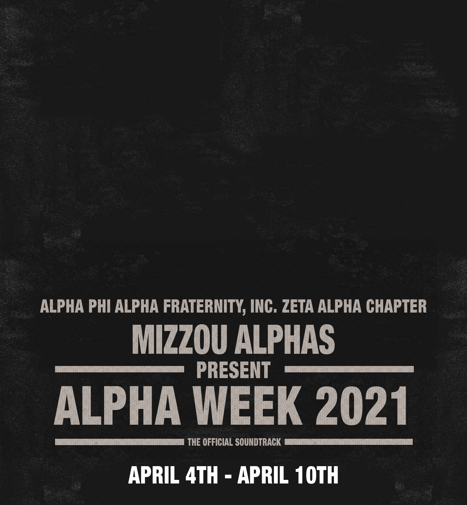
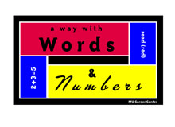
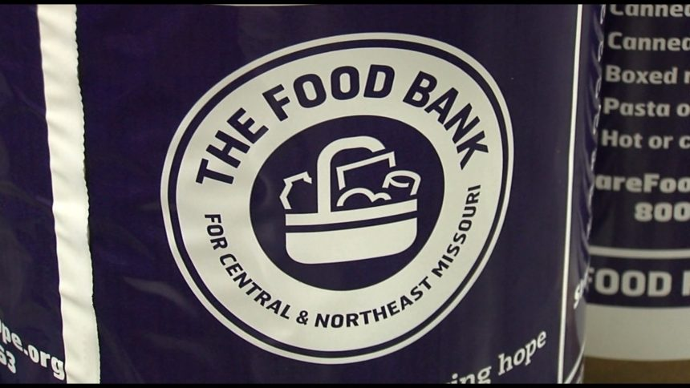

Projects

Designed organization website: For this project, I designed one of my orgs websites using square space. I did this about 2-3 years ago and at that time I had never designed a website or worked with square space at all before. I started this project because I felt like my organization needed a better website so I took it upon myself to learn how to use the platform that it was on which was square space. After playing with it for a while I got the hang of basic functions of it. Once I got that far I made a plan and had a vision of how I wanted it to look. So over winter break I designed the site and made it public.
3650 Project Management Project: For this project, I along with two other team members had to run a hypothetical digital media business. This project was given to us in the IT project management course IT 3650. The purpose of this project was to simulate how we could effectively run a business. Using budgets, scheduling software, and canvas, we constructed a great plan on how we wanted the business to operate. We were faced with realistic obstacles and constructive criticism on our progress. We also had to learn how to work together under a variety of circumstances that a business in the real world might encounter.
Digital Marketing for Alpha Week Party: For this project, I created a marketing scheme/plan for another one of my organizations spirit weeks. This project was also and independent project that I took upon myself to do. During this project, I designed and created flyers, video animations, used photo manipulation and other design aspects. This project was to attract our target audience to want to be involved in our week. So my goals was to make it appealing and relative to current events at the time. Like the first project I listed, I didn’t have too much experience in those areas and I have to learn things as I went along. It turned out successful and it was a fun week.
Experiences
TRT (2019-current) - MU Division of IT - Technical Response Team - Assist staff members with technology related questions, install computer workstations, install and update computer software.
A way with words (2017-2019) - Mizzou Learning Center - Tutor - Tutor K-5 children with words and phonics
Food Bank Columbia (2021) - Alpha Phi Alpha - Volunteer - Packaged dry goods for the homeless using bags
Clean up Columbia (2020) - Alpha Phi Alpha - Volunteer - Clean up MKT trail along Columbia